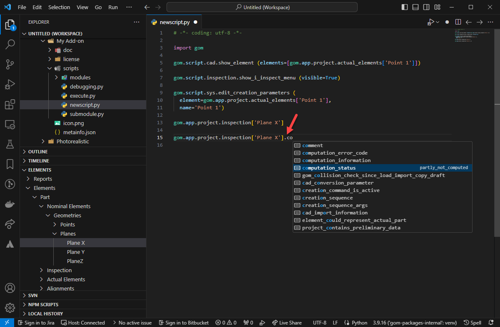

ZEISS INSPECT Python API Introduction
Welcome to the ZEISS INSPECT Python API introduction. This is your starting point into App development for ZEISS INSPECT. Here you find out what you can do with Apps, how they work and how you create them.
See Introduction to Python Scripting if you are new to Python or the ZEISS INSPECT Python interface.
Creating projects
You can create a new, empty project as follows:
# Create a new project
gom.script.sys.create_project ()
Note
This way, a project in the default workflow (part-based) is created. For the legacy workflow (part-less), please refer to Scripting with legacy projects (part-less)
Creating parts
The evaluation elements are usually placed under a “part”. Accordingly, an empty part can be created as follows:
# Creates a new part in your project with the name 'Part 1'
PART_OBJECT = gom.script.part.create_new_part (name='Part 1')
An existing part can be accessed via name or index in the new category:
# Access the part object via name
PART_OBJECT = gom.app.project.parts['Part 1']
# or via index
PART_OBJECT = gom.app.project.parts[0]
# you can access all parts via iterating over the parts attribute
for p in gom.app.project.parts:
print (p)
Adding elements to a part
If an actual mesh or CAD or elements are imported into a part project, different options are available. For scripting, the import is always separated into two different steps.
Importing the elements into the Elements in clipboard
Add the imported elements to a created part
Example:
gom.script.part.create_new_part (name='Part 1')
# import element into 'Element in clipboard'
gom.script.sys.import_g3d (
files=['D:/zeiss_part.g3d'],
import_mode='clipboard'
)
# Move it to a created part
gom.script.part.add_elements_to_part (
delete_invisible_elements=True,
elements=[gom.app.project.clipboard.actual_elements['zeiss_part']],
import_mode='new_elements',
part=gom.app.project.parts['Part 1'])
In the same way, a CAD can be imported into a part project.
Constructing new elements based on elements which already belong to a part are automatically added to that part.
Accessing CAD and actual mesh
A mesh element of a part can be accessed in the following ways:
# This is usually the most elegant way and is recommended.
# Replacing your mesh will keep the correct parametric if you use
# the actual values reference (like formerly the 'Actual master' in the part-less workflow).
PART_OBJECT = gom.app.project.parts['Part 1']
MESH_PROXY = gom.ActualReference (PART_OBJECT)
# If you really like to access the representing CAD Element (which is not always existing, e.g. for planning)
# you can access this element via
MESH_ELEMENT = gom.ActualReference(PART_OBJECT).actual
The CAD of a part can be addressed in the following ways:
# This is usually the most elegant way and is recommended.
# Replacing your CAD will keep the correct parametric if you use
# the nominal values reference (like formerly the 'All CAD Group proxy' in the part-less workflow)
PART_OBJECT = gom.app.project.parts['Part 1']
CAD_PROXY = gom.NominalReference (PART_OBJECT)
# If you really like to access the representing CAD Element (which is not always existing, e.g. for planning)
# you can access this element via
CAD_ELEMENT = gom.NominalReference(PART_OBJECT).nominal
Accessing an object’s part
This information can be retrieved via an attribute of the object. Here is an example:
PART_OBJECT = gom.app.project.inspection['Point 1'].part
Accessing all elements and alignments of a part
One possibility is to iterate over all elements in the different categories (nominal, actual, inspection, alignments) and to check the part attribute. Usually, for most applications this can be achieved easier using an ElementSelection (some elements are hidden and not listed, but usually you do not need access to these elements). Here is an example:
for x in gom.ElementSelection ({'category': ['key', 'elements', 'part', gom.app.project.parts['Part']]}):
print (x)
See Selecting elements in scripts for more details.
Accessing elements and alignments of Element in clipboard
Also, these elements can be easily accessed via an ElementSelection:
for x in gom.ElementSelection ({'category': ['key', 'elements', 'is_element_in_clipboard', 'True']}):
print (x)
Alignments
Alignments are still accessible via gom.app.project.alignments (like in the legacy workflow). The same is valid for gom.app.project.nominal_elements, gom.app.project.actual_elements and gom.app.project.inspection. You have to keep in mind that you will get all elements or alignments of all parts. You can use the part token to establish to which part an alignment belongs to or you use an ElementSelection (see examples above):
for x in gom.ElementSelection ({'category': ['key', 'elements', 'part', gom.app.project.parts['Part'], 'explorer_category', 'alignment']}):
print (x)
There is one special handling for multiple parts and scripting with the Original alignment. To distinguish these alignments for different parts, the scripting name contains the part name and is modified into:
gom.app.project.alignments['<Name of the part>::Original alignment']
Access element properties
The “elements” of the GOM Software, i.e. what you see in the element explorer of your project, hold several properties and data which you can access using the Python API.
First of all, you need a reference to an element, which you can get either by using a script dialog or simply by referencing it by name.
If you have installed the Python API Examples App from the store and loaded the zeiss_part_test_project (see the Python API Examples Documentation), you can reference the mesh like this:
mesh_element = gom.app.project.parts['Part'].actual
Explore available properties
Once you have a reference to an element, you can access its properties using several keywords in the form element.<keyword>.
One way to inspect the available keys is by using the ‘Script Object’ explorer, which is available from the Script Editor’s context menu: RMB ► Insert ► Element Value (shortcut F2).
{kind=link}
{kind=link}
You will find several keywords in the Object Explorer, with a preview of the current value.
If you click OK, the complete call, including element reference by name, will be copied to your current script. If you already have a name reference, you can of course use this reference.
mesh_element = gom.app.project.parts['Part'].actual
print (mesh_element.area)
Output:
>>> 207422.1875
Element properties in VSCode
Using Visual Studio Code, you can get auto-completion for the usable keywords directly in a pop-up.

See Using VSCode Editor for details.
Properties of different stages
If you are using a multi-stage project, the approach as described above will always give you the element properties in the current stage. If you need access to properties in a different stage, you can use the in_stage[s] modifier:
mesh_element = gom.app.project.parts['Part'].actual
print (mesh_element.in_stage[0].area)
Output:
>>> 207422.1875
Note
Stage indices start with index 0.
In this way, you can get simple properties of a different stage. If you need access to data of all stages at once, especially for larger data (like arrays of vertices), use “Data interfaces” as described below.
Element data interfaces
In a script, each element present in the application (project, inspection elements, reports, …) can be referenced by a named identifier. Each identifier consists of a type and some index, which can be a name or an integer number.
Concept
This is already the case for access via the data interface instead of the token interface: The returned value has the format (stages, <index dimensions>).
# Mesh in 8 stage trend project with 238654 points, each with one (x, y, z) triple
> print (gom.app.project.parts['Part'].actual.data.coordinate.shape)
(8, 238654, 3)
# Single scalar value in a 8 stages trend project
> print (gom.app.project.inspection['My Check'].data.result_dimension.deviation.shape)
(8, 1)
# Image in 8 stage trend project with 4000x3000 pixels, each with one (r, g, b, a) tuple
> print (gom.app.project.measurement_list['Scan'].measurement['M1'].images['Left camera'].data.rgb.shape)
(8, 3000, 4000, 4)
Note
When accessing the image, the complete data set is not transferred immediately from C++ to Python! Instead this happens just in the moment when it is converted into a numpy array!
# Fetch gom.Array with image data in all stages (not transferred !)
> image = gom.app.project.measurement_list['Scan'].measurement['M1'].images['Left camera'].data.rgb
> print (image.shape, type (image))
(8, 3000, 4000, 4), gom.Array ()
# 45 MB Image data if on stage, transferred in < 100 ms
> data = np.array (image[0])
> print (data.shape)
(3000, 4000, 4)
Exception handling
With the ZEISS INSPECT App API, three different types of exceptions can occur:
Python built-in exceptions
User defined exceptions, e.g. from a Python module
ZEISS INSPECT App API exceptions
It is recommended practice to avoid bare except clauses, i.e. to specify an exception type:
try:
calling_for_trouble() # could raise an exception
except <exception_type>:
# exception handling
If the type of exception is unknown, it can be identified as follows:
try:
calling_for_trouble() # could raise an exception; type unknown yet
except Exception as e:
print( type(e) ) # e.g.: <class 'gomlib.api.GomApiError'>
Now you can specify the expected exception type correctly:
import gomlib
...
try:
calling_for_trouble() # could raise a GomApiError exception
except gomlib.api.GomApiError:
# exception handling